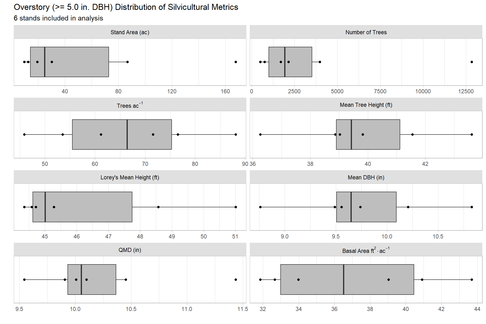
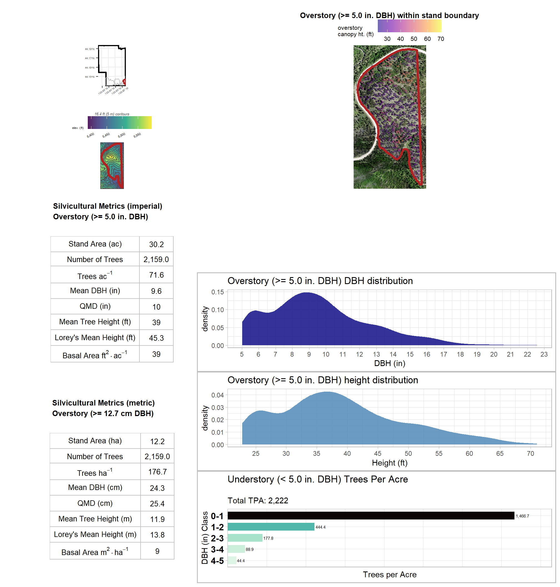
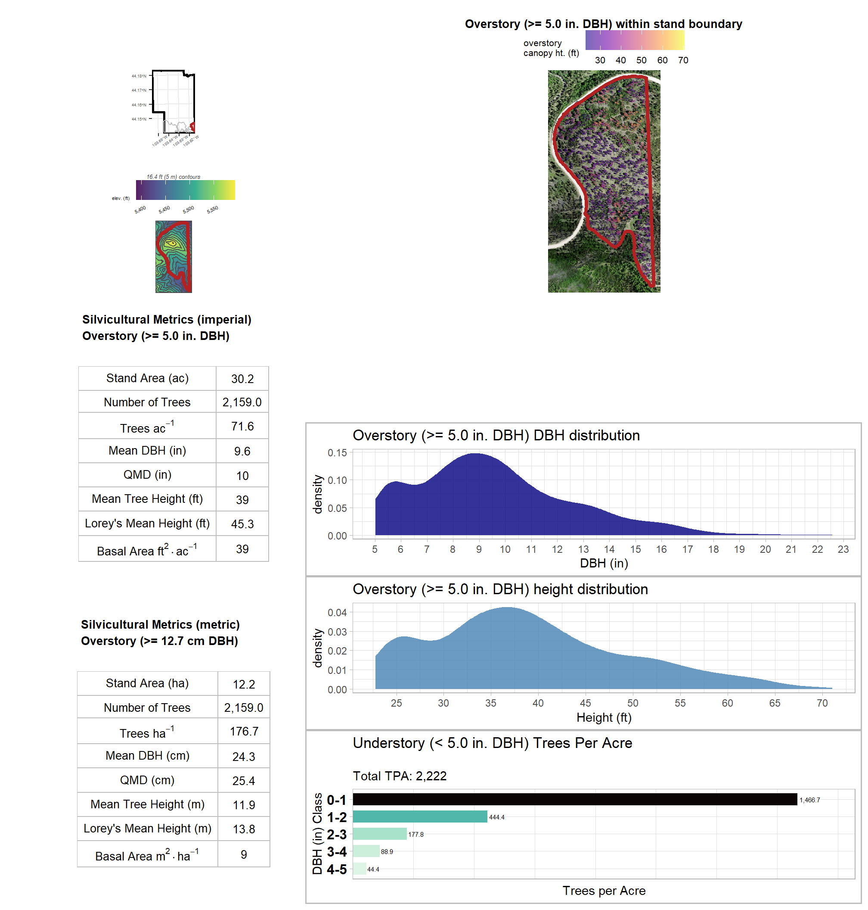

Section 6 Silvicultural Metrics
Silvicultural metrics are calculated based on the SfM-derived DBH and height measurements.
# Common silvicultural metrics are calculated for the entire extent.
# Note, that stand-level summaries can be computed if stand vector data is provided.
# metrics include:
# "n_trees"
# "stand_area_ha"
# "trees_per_ha"
# "mean_dbh_cm"
# "qmd_cm"
# "mean_tree_height_m"
# "loreys_height_m"
# "basal_area_m2"
# "basal_area_m2_per_ha"
### stand-level summaries
silv_metrics = harvests_trees %>%
sf::st_drop_geometry() %>%
dplyr::ungroup() %>%
dplyr::group_by(suid,stand_area_ha) %>%
dplyr::summarise(
n_trees = dplyr::n_distinct(treeID)
, mean_dbh_cm = mean(dbh_cm, na.rm = T)
, mean_tree_height_m = mean(tree_height_m, na.rm = T)
, loreys_height_m = sum(basal_area_m2*tree_height_m, na.rm = T) / sum(basal_area_m2, na.rm = T)
, basal_area_m2 = sum(basal_area_m2, na.rm = T)
, sum_dbh_cm_sq = sum(dbh_cm^2, na.rm = T)
) %>%
dplyr::ungroup() %>%
dplyr::mutate(
trees_per_ha = (n_trees/stand_area_ha)
, basal_area_m2_per_ha = (basal_area_m2/stand_area_ha)
, qmd_cm = sqrt(sum_dbh_cm_sq/n_trees)
) %>%
dplyr::select(-c(sum_dbh_cm_sq)) %>%
# convert to imperial units
dplyr::mutate(
dplyr::across(
.cols = tidyselect::ends_with("_cm")
, ~ .x * 0.394
, .names = "{.col}_in"
)
, dplyr::across(
.cols = tidyselect::ends_with("_m")
, ~ .x * 3.28
, .names = "{.col}_ft"
)
, dplyr::across(
.cols = tidyselect::ends_with("_m2_per_ha")
, ~ .x * 4.359
, .names = "{.col}_ftac"
)
, dplyr::across(
.cols = tidyselect::ends_with("_per_ha") & !tidyselect::ends_with("_m2_per_ha")
, ~ .x * 0.405
, .names = "{.col}_ac"
)
, dplyr::across(
.cols = tidyselect::ends_with("_area_ha")
, ~ .x * 2.471
, .names = "{.col}_ac"
)
, dplyr::across(
.cols = tidyselect::ends_with("_m2")
, ~ .x * 10.764
, .names = "{.col}_ft2"
)
) %>%
dplyr::rename_with(
.fn = function(x){dplyr::case_when(
stringr::str_ends(x,"_cm_in") ~ stringr::str_replace(x,"_cm_in","_in")
, stringr::str_ends(x,"_m_ft") ~ stringr::str_replace(x,"_m_ft","_ft")
, stringr::str_ends(x,"_m2_per_ha_ftac") ~ stringr::str_replace(x,"_m2_per_ha_ftac","_ft2_per_ac")
, stringr::str_ends(x,"_per_ha_ac") ~ stringr::str_replace(x,"_per_ha_ac","_per_ac")
, stringr::str_ends(x,"_area_ha_ac") ~ stringr::str_replace(x,"_area_ha_ac","_area_ac")
, stringr::str_ends(x,"_m2_ft2") ~ stringr::str_replace(x,"_m2_ft2","_ft2")
, TRUE ~ x
)}
) %>%
dplyr::select(
"suid"
, "n_trees"
, "stand_area_ha"
, "trees_per_ha"
, "mean_dbh_cm"
, "qmd_cm"
, "mean_tree_height_m"
, "loreys_height_m"
, "basal_area_m2"
, "basal_area_m2_per_ha"
# imperial
, "stand_area_ac"
, "trees_per_ac"
, "mean_dbh_in"
, "qmd_in"
, "mean_tree_height_ft"
, "loreys_height_ft"
, "basal_area_ft2"
, "basal_area_ft2_per_ac"
)
### export tabular
write.csv(
silv_metrics
, paste0(delivery_dir, "/stand_silv_metrics.csv")
, row.names = F
)
# join with spatial data
silv_metrics = harvests %>%
# join with plot data data
dplyr::inner_join(
silv_metrics
, by = dplyr::join_by("suid")
)6.1 Distribution of silvicultural metrics
Distribution of silvicultural metrics across the 6 stands in this analysis.
silv_metrics %>%
sf::st_drop_geometry() %>%
dplyr::select(
"suid"
, "stand_area_ac"
, "n_trees"
, "trees_per_ac"
, "mean_dbh_in"
, "qmd_in"
, "mean_tree_height_ft"
, "loreys_height_ft"
, "basal_area_ft2_per_ac"
) %>%
tidyr::pivot_longer(
cols = -c(suid), names_to = "metric", values_to = "val"
) %>%
# order metrics
dplyr::mutate(
metric = factor(
metric
, ordered = T
, levels = c(
"stand_area_ac"
, "n_trees"
, "trees_per_ac"
, "mean_tree_height_ft"
, "loreys_height_ft"
, "mean_dbh_in"
, "qmd_in"
, "basal_area_ft2_per_ac"
)
, labels = c(
latex2exp::TeX("Stand Area (ac)", output = "character")
, latex2exp::TeX("Number of Trees", output = "character")
, latex2exp::TeX("Trees $ac^{-1}$")
, latex2exp::TeX("Mean Tree Height (ft)", output = "character")
, latex2exp::TeX("Lorey's Mean Height (ft)", output = "character")
, latex2exp::TeX("Mean DBH (in)", output = "character")
, latex2exp::TeX("QMD (in)", output = "character")
, latex2exp::TeX("Basal Area $ft^{2} \\cdot ac^{-1}$")
)
)
) %>%
ggplot(
mapping = aes(
x = val
, y = 1
)
) +
geom_boxplot(fill = "gray", width = 0.7, outlier.shape = NA) +
geom_point(mapping = aes(group = suid)) +
facet_wrap(facets = vars(metric), ncol = 2, scales = "free_x", labeller = label_parsed) +
scale_x_continuous(breaks = scales::extended_breaks(6)) +
scale_y_continuous(limits = c(0.5,1.5)) +
labs(
y = ""
, x = ""
, title = "Distribution of Silvicultural Metrics"
, subtitle = paste(nrow(silv_metrics), "stands included in analysis")
) +
theme_light() +
theme(
legend.position = "none"
, strip.text = element_text(color = "black")
, strip.background = element_rect(fill = "gray88")
, axis.text.y = element_blank()
, axis.ticks.y = element_blank()
, panel.grid.major.y = element_blank()
, panel.grid.minor.y = element_blank()
)
6.2 Stand Basal Area Map
mapview::mapview(
bhef_boundary
, color = "black"
, lwd = 3
, alpha.regions = 0
, layer.name = "BHEF"
, label = FALSE
, legend = FALSE
, popup = FALSE
) +
mapview::mapview(
silv_metrics
, zcol = "basal_area_ft2_per_ac"
, layer.name = "BA (ft2 per ac)" #latex2exp::TeX("Basal Area $ft^{2} \\cdot ac^{-1}$")
, col.regions = viridis::cividis(n=nrow(silv_metrics)*1.1)
, alpha.regions = 0.7
, na.color = "transparent"
, popup = F
) 6.3 Stand QMD Map
Quadratic mean diameter (QMD) is a measure of the diameter of the tree of mean basal area:
\[ \textrm{quadratic mean diameter (QMD)} = \sqrt{\frac{\sum{d_{i}^{2}}}{n}} \]
, where \(d_{i}\) is the diameter at breast height of an individual tree, and \(n\) is the total number of trees.
mapview::mapview(
bhef_boundary
, color = "black"
, lwd = 3
, alpha.regions = 0
, layer.name = "BHEF"
, label = FALSE
, legend = FALSE
, popup = FALSE
) +
mapview::mapview(
silv_metrics
, zcol = "qmd_in"
, layer.name = "QMD (in)" #latex2exp::TeX("Basal Area $ft^{2} \\cdot ac^{-1}$")
, col.regions = viridis::mako(n=nrow(silv_metrics)*1.1, direction = -1)
, alpha.regions = 0.7
, na.color = "transparent"
, popup = F
) 6.4 Define Functions for Stand Summary
Create plots to combine for report
- orthomosaic + chm + tree tops + stand plot
######################################################################################
# function to plot ortho + chm + points + stand
######################################################################################
ortho_plt_fn = function(my_suid){
# convert to stars
ortho_st = ortho_rast %>%
terra::subset(subset = c(1,2,3)) %>%
terra::crop(
# stand %>%
harvests %>% dplyr::filter(suid==my_suid) %>%
sf::st_buffer(20) %>%
sf::st_bbox() %>%
sf::st_as_sfc() %>%
terra::vect()
) %>%
terra::aggregate(fact = 2, fun = "mean", na.rm = T) %>%
stars::st_as_stars()
# convert to rgb
ortho_rgb <- stars::st_rgb(
ortho_st[,,,1:3]
, dimension = 3
, use_alpha = FALSE
# , stretch = "histogram"
, probs = c(0.005, 0.995)
, stretch = "percent"
)
# ggplot
plt_rgb <- ggplot() +
stars::geom_stars(data = ortho_rgb[]) +
scale_fill_identity(na.value = "transparent") + # !!! don't take this out or RGB plot will kill your computer
scale_x_continuous(expand = c(0, 0)) +
scale_y_continuous(expand = c(0, 0)) +
labs(
x = ""
, y = ""
) +
theme_void()
# return(plt_rgb)
# combine all plot elements
plt_combine = plt_rgb +
ggnewscale::new_scale_fill() +
geom_tile(
data = chm_rast %>%
terra::crop(
harvests %>% dplyr::filter(suid==my_suid) %>%
terra::vect()
) %>%
terra::mask(
harvests %>% dplyr::filter(suid==my_suid) %>%
terra::vect()
) %>%
`*`(3.28) %>% # transform to feet
as.data.frame(xy=T) %>%
rename(f=3)
, mapping = aes(x=x,y=y,fill=f)
) +
scale_fill_viridis_c(option="plasma", alpha = 0.6) +
geom_sf(
data = harvests %>% dplyr::filter(suid==my_suid)
, alpha = 0
, lwd = 1.5
, color = "#b22222"
) +
geom_sf(
data = treetops_sf_with_dbh %>%
sf::st_intersection(harvests %>% dplyr::filter(suid==my_suid))
, color = "#330099"
, shape = "."
) +
labs(
fill = "canopy ht. (ft)"
# , title = "Trees identified within stand boundary"
, title = "<span><span style='color:#330099;'><b><i>Trees</i></b></span> identified within <span style='color:#b22222;'><b><i>stand</i></b></span> boundary</span>"
) +
theme(
legend.position = "top" # c(0.5,1)
, legend.direction = "horizontal"
, legend.margin = margin(0,0,-1,0)
, legend.text = element_text(size = 8)
, legend.title = element_text(size = 8)
, plot.title = ggtext::element_markdown(size = 10, hjust = 0.5)
)
return(plt_combine)
}
# ortho_plt_fn(harvests$suid[2])- dbh distribution plot
dbh_dist_fn = function(my_suid){
harvests_trees %>%
dplyr::filter(suid == my_suid) %>%
sf::st_drop_geometry() %>%
dplyr::select(treeID, dbh_in) %>%
dplyr::distinct() %>%
ggplot(
mapping = aes(x = dbh_in)
) +
geom_density(alpha = 0.8, fill = "navy", color = NA) +
labs(
x = "DBH (in)"
, y = "density"
, title = "SfM-derived tree DBH distribution"
) +
scale_x_continuous(breaks = scales::extended_breaks(n=20)) +
theme_light() +
theme(
legend.position = "none"
)
}
# dbh_dist_fn(harvests$suid[1])- height distribution plot
ht_dist_fn = function(my_suid){
harvests_trees %>%
dplyr::filter(suid == my_suid) %>%
sf::st_drop_geometry() %>%
dplyr::select(treeID, tree_height_ft) %>%
dplyr::distinct() %>%
ggplot(
mapping = aes(x = tree_height_ft)
) +
geom_density(alpha = 0.8, fill = "steelblue", color = NA) +
labs(
x = "Height (ft)"
, y = "density"
, title = "SfM-derived tree height distribution"
) +
scale_x_continuous(breaks = scales::extended_breaks(n=10)) +
theme_light() +
theme(
legend.position = "none"
)
}
# ht_dist_fn(harvests$suid[1])- silvicultural metrics imperial table
tab_imp_fn = function(my_suid){
silv_metrics %>%
dplyr::filter(suid == my_suid) %>%
sf::st_drop_geometry() %>%
dplyr::select(
"suid"
, "stand_area_ac"
, "n_trees"
, "trees_per_ac"
, "mean_dbh_in"
, "qmd_in"
, "mean_tree_height_ft"
, "loreys_height_ft"
, "basal_area_ft2_per_ac"
) %>%
tidyr::pivot_longer(
cols = -c(suid), names_to = "metric", values_to = "val"
) %>%
# order metrics
dplyr::mutate(
metric = factor(
metric
, ordered = T
, levels = c(
"stand_area_ac"
, "n_trees"
, "trees_per_ac"
, "mean_tree_height_ft"
, "loreys_height_ft"
, "mean_dbh_in"
, "qmd_in"
, "basal_area_ft2_per_ac"
)
, labels = c(
latex2exp::TeX("Stand Area (ac)", output = "character")
, latex2exp::TeX("Number of Trees", output = "character")
, latex2exp::TeX("Trees $ac^{-1}$")
, latex2exp::TeX("Mean Tree Height (ft)", output = "character")
, latex2exp::TeX("Lorey's Mean Height (ft)", output = "character")
, latex2exp::TeX("Mean DBH (in)", output = "character")
, latex2exp::TeX("QMD (in)", output = "character")
, latex2exp::TeX("Basal Area $ft^{2} \\cdot ac^{-1}$")
)
)
) %>%
dplyr::mutate(val = scales::comma(val,accuracy=0.1)) %>%
dplyr::select(metric, val) %>%
ggpubr::ggtexttable(
rows = NULL
, cols = rep("", 2)
, theme = ggpubr::ttheme(
base_style = "blank"
, tbody.style = ggpubr::tbody_style(
parse = T, fill = "white", linecolor = "gray"
, size = 10
)
)
) %>%
ggpubr::tab_add_title(
text = "Silvicultural Metrics (imperial)", face = "bold"
, size = 10, padding = unit(0.5, "line")
)
}
# tab_imp_fn(harvests$suid[2])- silvicultural metrics metric table
tab_met_fn = function(my_suid){
silv_metrics %>%
dplyr::filter(suid == my_suid) %>%
sf::st_drop_geometry() %>%
dplyr::select(
"suid"
, "stand_area_ha"
, "n_trees"
, "trees_per_ha"
, "mean_dbh_cm"
, "qmd_cm"
, "mean_tree_height_m"
, "loreys_height_m"
, "basal_area_m2_per_ha"
) %>%
tidyr::pivot_longer(
cols = -c(suid), names_to = "metric", values_to = "val"
) %>%
# order metrics
dplyr::mutate(
metric = factor(
metric
, ordered = T
, levels = c(
"stand_area_ha"
, "n_trees"
, "trees_per_ha"
, "mean_tree_height_m"
, "loreys_height_m"
, "mean_dbh_cm"
, "qmd_cm"
, "basal_area_m2_per_ha"
)
, labels = c(
latex2exp::TeX("Stand Area (ha)", output = "character")
, latex2exp::TeX("Number of Trees", output = "character")
, latex2exp::TeX("Trees $ha^{-1}$")
, latex2exp::TeX("Mean Tree Height (m)", output = "character")
, latex2exp::TeX("Lorey's Mean Height (m)", output = "character")
, latex2exp::TeX("Mean DBH (cm)", output = "character")
, latex2exp::TeX("QMD (cm)", output = "character")
, latex2exp::TeX("Basal Area $m^{2} \\cdot ha^{-1}$")
)
)
) %>%
dplyr::mutate(val = scales::comma(val,accuracy=0.1)) %>%
dplyr::select(metric, val) %>%
ggpubr::ggtexttable(
rows = NULL
, cols = rep("", 2)
, theme = ggpubr::ttheme(
base_style = "blank"
, tbody.style = ggpubr::tbody_style(
parse = T, fill = "white", linecolor = "gray"
, size = 10
)
)
) %>%
ggpubr::tab_add_title(
text = "Silvicultural Metrics (metric)", face = "bold"
, size = 10, padding = unit(0.5, "line")
)
}
# tab_met_fn(harvests$suid[2])- inset map plot
plt_inset_map_fn <- function(my_suid){
(
ggplot() +
geom_sf(data = bhef_boundary, alpha = 0, lwd = 1, color = "black") +
geom_sf(data = harvests, alpha = 0, lwd = 0.4, color = "gray") +
geom_sf(
data = harvests %>% dplyr::filter(suid == my_suid)
, fill = "firebrick"
, alpha = 0.3
, lwd = 1.5
, color = "firebrick"
) +
# geom_sf_label(
# data = rx_fire
# , aes(label = unit)
# , label.size = NA
# , alpha = 0
# , size = 2.5
# ) +
xlab("") +
ylab("") +
scale_x_continuous(expand = c(0, 0)) +
scale_y_continuous(expand = c(0, 0)) +
theme_bw() +
theme(
axis.text = element_text(size = 5.5)
, axis.text.x = element_text(angle = 35)
, panel.border = element_blank()
)
)
}
# plt_inset_map_fn(harvests$suid[4])- contour + elevation map plot
# sequence by 5's to get 5m breaks list for contour
contour_int_m <- 5
seq_brk <- seq(0, 40000, contour_int_m)
# create contour data
elev_contour <- dtm_rast %>%
stars::st_as_stars() %>%
stars::st_contour(
na.rm = TRUE
, contour_lines = FALSE
, breaks = # classInt::classIntervals(na.omit(as.vector(x[[1]])))$brks
seq_brk[
seq_brk > min(na.omit(as.vector(dtm_rast[[1]]))) - contour_int_m
& seq_brk < max(na.omit(as.vector(dtm_rast[[1]]))) + contour_int_m
]
)
plt_contour_map_fn <- function(my_suid){
(
#########################################
#########################################
# map of unit w/ contour
#########################################
#########################################
# plot
ggplot() +
geom_tile(
data = dtm_rast %>%
terra::crop(
harvests %>% dplyr::filter(suid == my_suid) %>%
sf::st_buffer(dist = 20) %>%
sf::st_bbox() %>%
sf::st_as_sfc() %>%
terra::vect()
) %>%
terra::aggregate(fact=2) %>%
`*`(3.28) %>% # transform to feet
as.data.frame(xy=T) %>%
dplyr::rename(elev = 3)
, mapping = aes(x=x,y=y,fill=elev)
) +
geom_sf(data = elev_contour %>%
sf::st_crop(
harvests %>% dplyr::filter(suid == my_suid) %>%
sf::st_buffer(dist = 20) %>%
sf::st_bbox()
)
, alpha = 0
, lwd = 0.5
, color = "gray30"
, show.legend = FALSE
) +
geom_sf(data = harvests %>% dplyr::filter(suid == my_suid)
, alpha = 0
, lwd = 1.5
, color = "firebrick"
, show.legend = FALSE
) +
scale_fill_viridis_c(
option = "viridis"
, alpha = 0.9
, na.value = "transparent"
, breaks = scales::extended_breaks(n = 6)
, labels = scales::comma
) +
scale_x_continuous(expand = c(0, 0)) +
scale_y_continuous(expand = c(0, 0)) +
labs(
subtitle = paste0(
as.character(round(contour_int_m * 3.28, 1))
, " ft ("
, as.character(contour_int_m)
, " m) contours"
)
, fill = "elev. (ft)"
, x = ""
, y = ""
) +
theme_void() +
theme(
legend.position = "top"
, legend.direction = "horizontal"
, legend.margin = margin(0,0,-1,0)
# , legend.box.margin = margin(-1,0,2,0)
, legend.text = element_text(size = 7, angle = 25, hjust = 0.7)
, legend.title = element_text(size = 7)
, plot.subtitle = element_text(
size=9, face="italic", color="gray20", margin = margin(0,0,0,0)
, hjust = 0.5
)
)
)
}
# plt_contour_map_fn(harvests$suid[1])- build report
report_fn = function(my_suid){
# generate plots
ortho_plt_temp = ortho_plt_fn(my_suid) # ortho_plt_fn(harvests$suid[4])
dbh_dist_temp = dbh_dist_fn(my_suid) # dbh_dist_fn(harvests$suid[4])
ht_dist_temp = ht_dist_fn(my_suid) # ht_dist_fn(harvests$suid[4])
plt_inset_map_temp = plt_inset_map_fn(my_suid) # plt_inset_map_fn(harvests$suid[4])
plt_contour_map_temp = plt_contour_map_fn(my_suid) # plt_contour_map_fn(harvests$suid[4])
tab_imp_temp = tab_imp_fn(my_suid) # tab_imp_fn(harvests$suid[4])
tab_met_temp = tab_met_fn(my_suid) # tab_met_fn(harvests$suid[4])
# plot layout
# area(t,l,b,r)
layout_temp = c(
# map
area(1, 1, 3, 2)
# space
, area(1, 3, 1, 4)
# distributions
, area(2, 3, 2, 4)
, area(3, 3, 3, 4)
# space
, area(4, 3, 4, 4)
# map inset
, area(4, 1, 5, 1)
# contour
, area(4, 2, 5, 2)
# tables
, area(5, 3)
, area(5, 4)
# space
, area(6, 1, 6, 4)
)
# check the layout
# plot(layout_temp)
# patchwork
rpt = ortho_plt_temp +
patchwork::plot_spacer() +
dbh_dist_temp + ht_dist_temp +
patchwork::plot_spacer() +
plt_inset_map_temp +
plt_contour_map_temp +
tab_imp_temp + tab_met_temp +
patchwork::plot_spacer() +
patchwork::plot_layout(
design = layout_temp
, heights = c(0.01,1,1,0.4,1,0.1)
, widths = c(0.5,1,1,1)
)
# export
ggplot2::ggsave(
filename = paste0(delivery_dir, "/suid_", my_suid, ".pdf")
, plot = rpt
, device = "pdf"
, width = 11, height = 8.5, units = "in"
)
return(rpt)
} 
